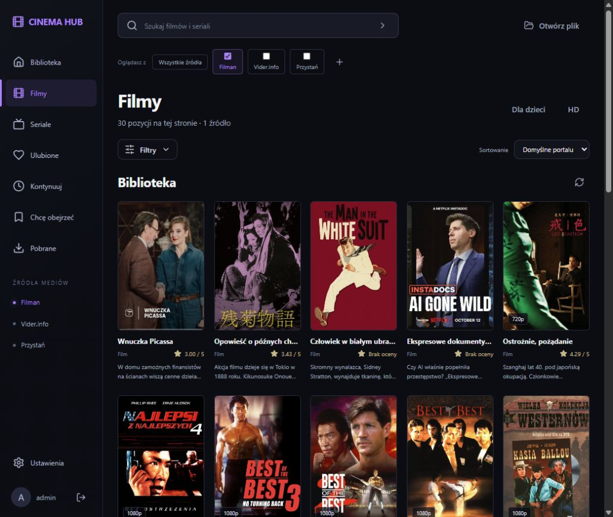
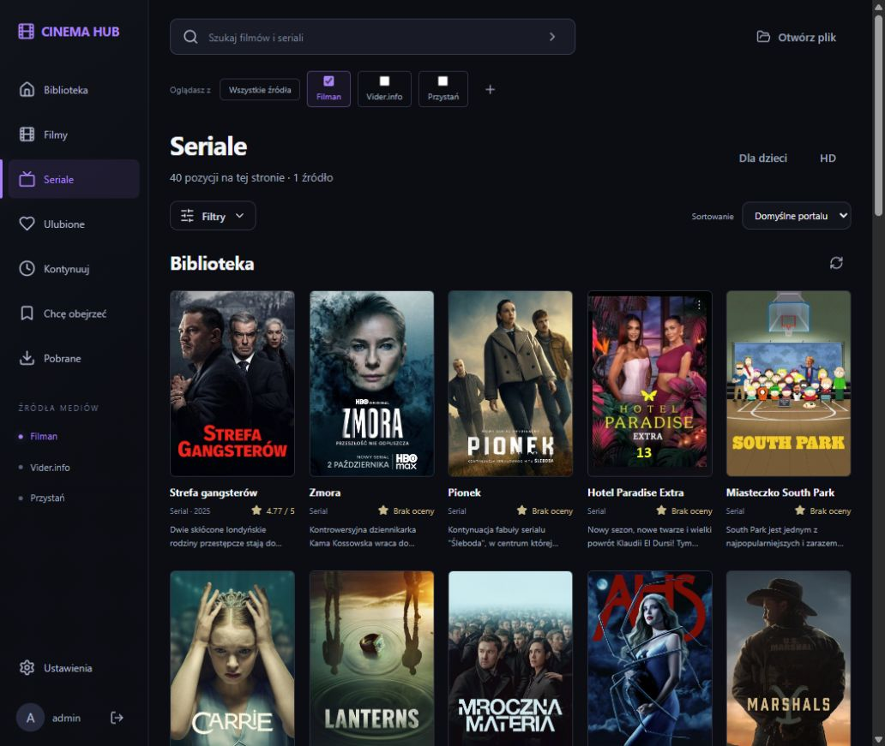
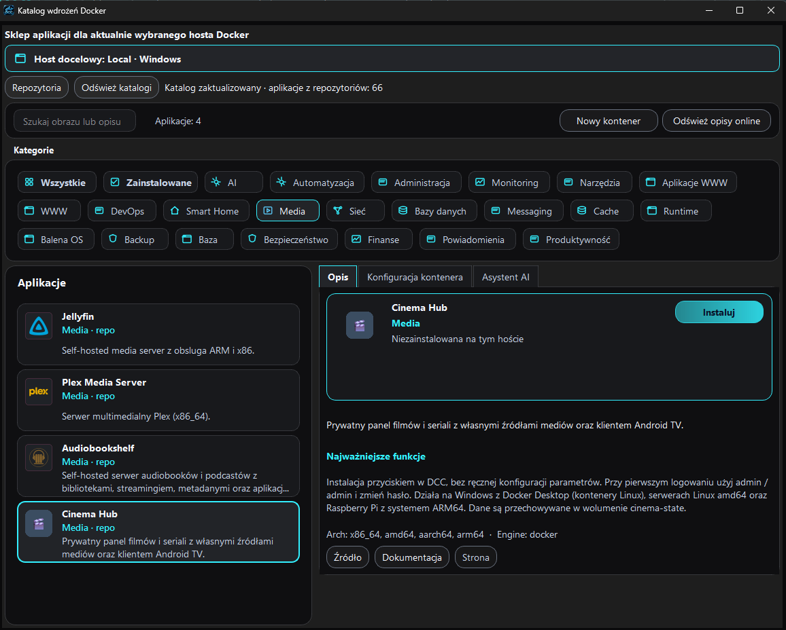

Własne źródła
Osobne ustawienia i logowanie. Filman, Vider, Przystań oraz własne serwery HTTP, Plex, WebDAV, FTP i S3.
Filmy i seriale z Twoich źródeł. Przejrzysty katalog z okładkami, własne profile i aplikacja na Android TV. Serwer działa u Ciebie — w kontenerze Docker.
Windows · Linux · Raspberry Pi · Android TV

Osobne ustawienia i logowanie. Filman, Vider, Przystań oraz własne serwery HTTP, Plex, WebDAV, FTP i S3.
Ulubione, lista „Chcę obejrzeć” i historia postępu. Wróć do seansu na swoim urządzeniu.
Klient Android TV z obsługą pilota i natywnym odtwarzaczem. Połącz telewizor z adresem swojego serwera.
Rzeczywiste zrzuty aplikacji. Kliknij obraz, aby go powiększyć.
Okładki, opisy, oceny oraz wyszukiwanie i filtry dostępne dla wybranego źródła.

Przeglądaj seriale i dostępne odcinki. Obsługa sezonów zależy od adaptera źródła.
Zawartość katalogu pochodzi ze skonfigurowanych źródeł. Cinema Hub nie zawiera filmów; możliwości wyszukiwania, filtrów i sezonów zależą od źródła. Sprawdź obsługę źródeł ↗
Cinema Hub jest już w sklepie aplikacji Docker Control Center (DCC), w kategorii Media.
DCC → SKLEP → Media → Cinema Hub → Instaluj
Windows wymaga Docker Desktop z kontenerami Linux. Linux i Raspberry Pi wymagają działającego Dockera; na Pi użyj systemu 64-bit ARM64.

Serwer w Dockerze. Panel w przeglądarce. APK na telewizorze.